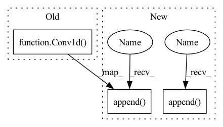

Pattern ID :26625

Before Change
self.reduced_cov = None
if residual:
self.reduced_cov = Sequential(
Conv1d(out_channels, kernel_size=3, stride=stride), norm()
)
if isinstance(activation, Swish):
After Change
self.reduced_cov = None
if residual:
self.reduced_cov = Sequential(input_shape)
self.reduced_cov.append(
Conv1d, out_channels, kernel_size=3, stride=stride,
)
self.reduced_cov.append(norm)
if isinstance(activation, Swish):
self.activation = activation(beta)
else:
In pattern: SUPERPATTERN
Frequency: 3
Non-data size: 3
Instances
Fragment ID: 79679182
Project Name: speechbrain/speechbrain
Commit Name: f483e5925e86f8bb13e1aeb457b8e9b66932fab2
Time: 2020-08-27
Author: plantinga.peter@protonmail.com
File Name: speechbrain/lobes/models/ContextNet.py
M Class Name: ContextNetBlock
N Class Name: ContextNetBlock
M Method Name: __init__(13)
N Method Name: __init__(12)
M Parent Class: torch.nn.Module
N Parent Class: torch.nn.Module
M File Name: speechbrain/lobes/models/ContextNet.py
N File Name: speechbrain/lobes/models/ContextNet.py
M Start Line: 235
M End Line: 258
N Start Line: 228
N End Line: 265
'>
Before Change
causal=False,
):
// [M, K, H] -> [M, K, H]
depthwise_conv = Conv1d(
in_channels,
kernel_size,
stride=stride,
padding=padding,
dilation=dilation,
groups=in_channels,
bias=False,
)
if causal:
chomp = Chomp1d(padding)
prelu = nn.PReLU()
norm = choose_norm(norm_type, in_channels)
After Change
batchsize, time, in_channels = input_shape
// [M, K, H] -> [M, K, H]
self.append(
sb.nnet.Conv1d,
out_channels=in_channels,
kernel_size=kernel_size,
stride=stride,
padding=padding,
dilation=dilation,
groups=in_channels,
bias=False,
)
if causal:
self.append(Chomp1d(padding))
self.append(nn.PReLU())
self.append(choose_norm(norm_type, in_channels))
// [M, K, H] -> [M, K, B]
self.append(
sb.nnet.Conv1d, out_channels=out_channels, kernel_size=1, bias=False
'>
Fragment ID: 79679192
Project Name: speechbrain/speechbrain
Commit Name: 393755f5b4058182057f91291b4374f29ad76301
Time: 2020-09-11
Author: plantinga.peter@protonmail.com
File Name: speechbrain/lobes/models/conv_tasnet.py
M Class Name: DepthwiseSeparableConv
N Class Name: DepthwiseSeparableConv
M Method Name: __init__(9)
N Method Name: __init__(9)
M Parent Class: sb.nnet.Sequential
N Parent Class: Sequential
M File Name: speechbrain/lobes/models/conv_tasnet.py
N File Name: speechbrain/lobes/models/conv_tasnet.py
M Start Line: 354
M End Line: 374
N Start Line: 406
N End Line: 431
'>
Before Change
causal=False,
):
// [M, K, B] -> [M, K, H]
conv1x1 = Conv1d(out_channels, 1, bias=False)
prelu = nn.PReLU()
norm = choose_norm(norm_type, out_channels)
// [M, K, H] -> [M, K, B]
dsconv = DepthwiseSeparableConv(
After Change
M, K, B = input_shape
// [M, K, B] -> [M, K, H]
self.append(
sb.nnet.Conv1d, out_channels=out_channels, kernel_size=1, bias=False
)
self.append(nn.PReLU())
self.append(choose_norm(norm_type, out_channels))
// [M, K, H] -> [M, K, B]
self.append(
'>
Fragment ID: 79679189
Project Name: speechbrain/speechbrain
Commit Name: 393755f5b4058182057f91291b4374f29ad76301
Time: 2020-09-11
Author: plantinga.peter@protonmail.com
File Name: speechbrain/lobes/models/conv_tasnet.py
M Class Name: TemporalBlock
N Class Name: TemporalBlock
M Method Name: __init__(9)
N Method Name: __init__(9)
M Parent Class: sb.nnet.Sequential
N Parent Class: Sequential
M File Name: speechbrain/lobes/models/conv_tasnet.py
N File Name: speechbrain/lobes/models/conv_tasnet.py
M Start Line: 282
M End Line: 298
N Start Line: 321
N End Line: 341